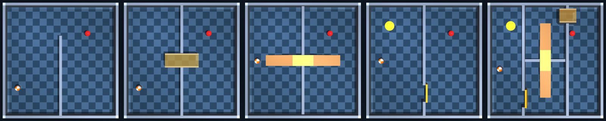

1. Overview
The package is layered: an MJCF physics model, a Gymnasium environment that wraps it, then tools (collection, evaluation, rendering, teleoperation) that only talk to the environment.
assets/sphere_arena.xmlphysics
The world: sphere, arena, goal, lights, cameras. Single source of truth for the physics.
env.pycore
Gymnasium "reach the goal" environment. Defines observation, action, reward.
courses.pycore
5 obstacle courses built programmatically on top of the arena, plus a scripted driver.
dataset.pydata
Exploration policy, trajectory collection, .npz save/load.
world_model.pyeval
WorldModel interface, baseline models, multi-horizon RMSE metric.
torch_world_model.pyoptional
PyTorch dynamics MLP (PETS/MBPO style), installed with the torch extra.
render.pyvideo
Classic OpenGL or Filament PBR rendering, MP4 recording via imageio.
teleop.py · cli.pytools
Keyboard control in the MuJoCo viewer; modular-sphere entry point.
2. The simulation — sphere_arena.xml
One MJCF file describes everything MuJoCo simulates. The robot is not a "free" sphere: it is guided by three slide joints (x, y, z) and one ball joint ("roll"). Two motors push on the x and y slides: that is the action.
<body name="sphere"> <joint name="slide_x" type="slide" axis="1 0 0" damping="0.69"/> ← viscous friction <joint name="slide_y" type="slide" axis="0 1 0" damping="0.69"/> <joint name="slide_z" type="slide" axis="0 0 1"/> ← can bounce off a wall <joint name="roll" type="ball"/> ← rolls without slipping <geom type="sphere" size="0.1" mass="0.3" material="sphere" …/> </body> <motor name="force_x" joint="slide_x" ctrlrange="-1 1" gear="1"/> ← action[0] in N <motor name="force_y" joint="slide_y" ctrlrange="-1 1" gear="1"/> ← action[1] in N
| Parameter | Value | Why |
|---|---|---|
| Physics step | 2 ms, implicitfast integrator | stable with damping and contacts |
| Control | 25 physics steps per action → 20 Hz | dt = 0.05 s |
| Sphere | r = 0.1 m, m = 0.3 kg, solid-sphere inertia | effective rolling mass = 1.4 m |
| Damping | 0.69 N·s/m | equivalent to the former PyBullet linearDamping 0.9 |
| Terminal velocity | F/c = 1/0.69 ≈ 1.45 m/s | checked by test_physics.py (< 2 %) |
| Goal | red mocap body, no collision | visual marker, moved by the env |
The file also holds the visual part (sky, checkerboard, shadows, two lights, overview, top and track cameras)
and <numeric name="filament.fallback.*"> entries that set the lighting of the Filament engine.
3. The environment — env.py
SphereReachEnv inherits from gymnasium.envs.mujoco.MujocoEnv, which already handles model loading,
do_simulation, rendering and seeding. The code only adds what is specific to the task.
Observation (11 values, world frame)
| Indices | Name (OBS_SLICES) | Content |
|---|---|---|
| 0–2 | pos | position x, y, z [m] |
| 3–5 | vel | linear velocity [m/s] |
| 6–8 | ang_vel | angular velocity, rotated from the body frame to the world frame [rad/s] |
| 9–10 | goal_rel | goal − position, in x, y [m] |
One environment step
def step(self, action):
ctrl = np.clip(action, -1.0, 1.0) # force x, y in newtons
self.do_simulation(ctrl, self.frame_skip) # 25 × 2 ms
dist = self._dist()
success = dist < SUCCESS_DIST # 0.2 m
reward = (self._prev_dist - dist) - STEP_PENALTY + SUCCESS_BONUS * success
# progress toward goal - 0.01/step + 10 if reached
return obs, reward, terminated=success, truncated=False, {"distance", "is_success"}
Truncation at 200 steps is added by gym.make (max_episode_steps declared in __init__.py).
sample_goal() draws a goal with |x|, |y| ∈ [0.5, 1.0] m and random signs. set_from_obs(obs) is the inverse
of the observation: it puts the simulator back in the described state (used by the oracle).
4. The courses — courses.py
Rather than duplicating the XML, each level starts from the arena and edits it with the mujoco.MjSpec API
(add_geom, add_body, add_joint, add_actuator), plugged into Gymnasium's
_initialize_simulation hook.

def _initialize_simulation(self):
spec = mujoco.MjSpec.from_file(MODEL_PATH) # base arena
spec.body("sphere").pos = (*self.level.start, 0.1)
self.level.build(spec) # _l1 … _l5: walls, tunnel, ramps, door
model = spec.compile()
return model, mujoco.MjData(model)
| Level | Obstacle | Required skill | Max steps |
|---|---|---|---|
| L1 baffle | wall across the arena, opening on one side | go around | 200 |
| L2 tunnel | only opening: 0.4 × 0.26 m tunnel | aim for a narrow passage | 200 |
| L3 bridge | 13 cm low wall that cannot be crossed, deck at 18 cm on 10° ramps | slow down on slopes, stay within 40 cm width | 250 |
| L4 gate | floor pressure plate that opens a sliding door | deliberate detour (moving away from the goal) | 300 |
| L5 combined | plate → door → bridge → tunnel | chain everything | 600 |
The observation grows to 13 values: the 11 base ones + button (0/1, latched once pressed) + door
(opening 0–1). The door is a real MuJoCo slide joint driven by a position actuator; the env sets its target in
do_simulation. Only the sphere's two motors are in the action space.
WaypointPolicy is a scripted driver: it aims at the level's next waypoint with a desired speed
(braking on approach), proportional feedback on velocity and damping compensation
(F = 3·(v_des − v) + 0.69·v_des). It serves as proof that every level is feasible.
5. The data — dataset.py
- Exploration: half of the episodes use Ornstein-Uhlenbeck noise (smooth random motion), the other half a noisy PD controller
2·goal_rel − vel. This covers diverse states and useful trajectories. - Fixed length: episodes are not cut at success, to get regular arrays
obs (E, T+1, 11),actions (E, T, 2). - Validation:
TrajectoryDatasetis a frozen dataclass that checks shape consistency at construction.
6. The world models — world_model.py, torch_world_model.py
A world model predicts the future from the initial state and the actions. The contract is deliberately minimal:
class WorldModel(Protocol):
def rollout(self, obs0: (B, 11), actions: (B, H, 2)) -> (B, H, 11): ...
# fit(dataset) optional: the CLI calls it if the method exists
| Model | Principle | Role |
|---|---|---|
oracle | puts MuJoCo back in the state (set_from_obs) and replays the actions | lower bound: error ≈ 0 (< 1e-6) |
constant-velocity | the sphere keeps moving in a straight line | upper bound: "no physics" |
linear | ridge regression: Δobs = W·[obs, action, 1] | simplest learned baseline |
mlp | SiLU 3×256 network predicting the normalized Δobs, AdamW + cosine, autoregressive rollout | neural world model (PETS/MBPO without ensemble) |
evaluate(model, dataset, horizons, stride) splits the evaluation trajectories into sliding windows, runs
rollout open-loop, and returns the RMSE per horizon and per group (pos, vel, ang_vel,
goal_rel, all). A good model lies between constant-velocity and oracle, and its error
grows slowly with the horizon.
MLPWorldModel.fit: x = [(obs − μ)/σ, action] y = (Δobs − μΔ)/σΔ loss = MSE(net(x), y) MLPWorldModel.rollout: obs ← obs + net(x)·σΔ + μΔ (repeated H times)
7. Rendering — render.py
ClassicRenderer
10-line adapter over mujoco.Renderer (OpenGL via EGL, OSMesa or GLFW depending on MUJOCO_GL).
Also used for Gymnasium image observations.
FilamentRenderer
Physically based (PBR) rendering from MuJoCo 4: mjrf.Context → Renderer → ModelScene → View.
Adds the headlamp in lux like MuJoCo Studio. Requires Python ≥ 3.12 and an X display.
record() + write_mp4()
Runs the exploration policy, captures one frame per step, encodes to H.264 with
imageio + the ffmpeg bundled with imageio-ffmpeg.
Both engines follow the same small FrameRenderer protocol (render(data, camera), close()),
selected by make_renderer("classic" | "filament", …).
8. The command line — cli.py, teleop.py
| Command | Does |
|---|---|
modular-sphere teleop | opens the passive MuJoCo viewer; arrows = force (held 0.25 s), N = new goal |
modular-sphere record --out x.mp4 [--renderer filament] [--camera track] | video of a rollout |
modular-sphere collect --out d.npz --episodes 200 | dataset |
modular-sphere eval-wm --model mlp --train-data … --eval-data … | trains if needed, then prints the RMSEs as JSON |
A model is plugged in through a factory: --model modular_sphere.module:factory (imports restricted to the modular_sphere package).
9. The tests — tests/
| File | What is checked |
|---|---|
test_env.py | Gymnasium API conformance, seed and goal range, push → rolling, walls, success + bonus, rgb_array rendering |
test_physics.py | response against the analytical rolling model, free decay, saturation, time-step convergence, wall impacts (penetration, bounce, velocity bounded), zero-action negative control |
test_world_model.py | dataset shapes and round trip, exact oracle, linear < constant-velocity, CLI |
test_torch_world_model.py | loss decreases, MLP < constant-velocity, identical checkpoint, CLI (skipped without PyTorch) |
test_courses.py | each level solved by the driver, negative controls fail, door blocks then opens, physical bounds |
test_render.py | non-empty images on 3 cameras, 10-frame H.264 MP4, Filament image (skipped without display/3.12) |
test_teleop.py | fake viewer: right arrow → the sphere moves along +x |
test_tools.py | course collection (API and CLI, invalid level rejected), --model import allowlist,
eval_gui: driver + oracle ghost, fake viewer, MP4 export, wrong-dimension model rejected |
test_error_paths.py | CLI errors (unknown model, no PyTorch, no rollout, no --train-data),
invalid observation shape, untrained models, MLP CPU fallback |
GitHub CI (.github/workflows/ci.yml) runs ruff then pytest with coverage (pytest-cov, uploaded to Codecov
from Python 3.12) on Python 3.11 and 3.12, without GPU (OSMesa + Xvfb, CPU PyTorch). Locally:
uv run pytest --cov (100 %, Filament subprocess included via patch = ["subprocess"]).
9 bis. Additional tools
tools/collect_courses.pydata
Data collection for the 5 course levels. Uses the same exploration policy (OU + PD) as dataset.py but adapted to the 13D course observations.
tools/eval_gui.pyvisualization
Interactive evaluation with the MuJoCo viewer. Lets you watch the model in action, try different policies (PD, random, waypoint; open-loop ghost prediction re-anchored every --horizon steps), and record videos. Supports the basic reach environment and all course levels.
10. The full flow
uv run modular-sphere collect --out data/train.npz --episodes 200 --seed 0 uv run modular-sphere collect --out data/eval.npz --episodes 50 --seed 10000 uv run modular-sphere eval-wm --model mlp --train-data data/train.npz --eval-data data/eval.npz
rollout (and fit if it learns),
a no-argument function that builds it, then --model modular_sphere.module:factory (imports restricted to the modular_sphere package).